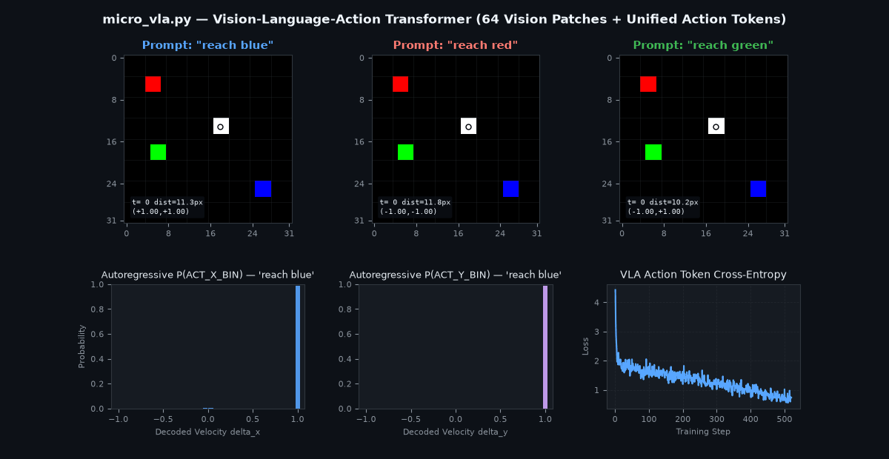

microVLA: Demystifying Vision-Language-Action Models from First Principles
If you work in robotics today, it is hard to miss the wave of excitement around Vision-Language-Action (VLA) models. Systems like RT-2, OpenVLA, and π0 have shown that you can feed camera images and natural language instructions into a Transformer and directly output robot control actions.
If you’re like me, though, reading papers or pulling down a 7-billion-parameter checkpoint from Hugging Face still leaves an itch unscratched. In typical robotics stacks, the core idea gets buried under layers of heavy infrastructure—pretrained vision backbones, complex tokenizers, simulation bindings (MuJoCo, Isaac, ROS), and distributed training harnesses. Strip all of that away, and what is a VLA at its most atomic level?
Inspired by Andrej Karpathy’s microgpt, I wanted to build the smallest, cleanest, first-principles implementation of an RT-2 style VLA that I could fit into a single Python file—with zero dependencies beyond PyTorch and Matplotlib, and fast enough to train and run closed-loop inference on a laptop CPU in under 30 seconds.
micro_vla.py.

The Core Idea: Robot Actions Are Just Vocabulary Tokens
The central insight behind RT-2 style VLAs is deceptively simple: if you discretize continuous robot actions into bins, motor control becomes indistinguishable from next-token prediction in a language model.
In micro_vla.py, we set up a 2D 32x32 RGB workspace containing a white 2-DOF point-mass gripper and three colored target dots (red, green, blue). At every control step, three modalities are fused into a single causal Transformer stream:
-
Vision Patches (64 tokens): The
32x32x3RGB observation is sliced into an8x8grid of non-overlapping4x4patches (48 floats per patch), projected tod_model = 64viaMicroPatchEmbed, and summed with learned 1D spatial positional embeddings. -
Text & Control Tokens (6 tokens): A minimal word-level vocabulary covering
["PAD", "ACT_START", "reach", "red", "green", "blue"]. -
Discretized Action Bin Tokens (64 tokens): Continuous 2D velocity commands (Δx, Δy) ∈ [-1.0, 1.0] are uniformly quantized into 32 bins per axis:
X_BIN_0 .. X_BIN_31(token IDs6..37) andY_BIN_0 .. Y_BIN_31(token IDs38..69).
That gives us a unified vocabulary of just 70 tokens. Each training example is a 68-token sequence where vision patches, language tokens, and discretized motor tokens sit side-by-side:
Input Sequence: [PATCH_0 ... PATCH_63] | ["reach", <color>] | ["ACT_START"] | [ACT_X_BIN]
Target Sequence: [ ... ignored ... ] | [ ... ignored ... ] | [ACT_X_BIN] | [ACT_Y_BIN]
A tiny 3-layer, 4-head causal Transformer (MicroVLA, 117K parameters) runs over this 68-token sequence and is trained with standard cross-entropy loss (with ignore_index=-100 masking out the vision and prompt positions) to predict ACT_X_BIN and ACT_Y_BIN.
The Robotics Catch: Imitation Learning & Causal Confusion
Building a toy model from scratch is always humbling because there is nowhere for bugs—or bad assumptions—to hide.
In my first pass at generating synthetic expert trajectories, I spawned the gripper and the three colored dots, picked a random prompt (say, "reach blue"), and stepped a proportional controller for 15 steps toward the blue dot. The training loss dropped nicely, so I ran an inference rollout on an unseen state. The gripper moved decisively, smoothly, and confidently—straight into the red dot.
Why? Think about what a 15-step expert trajectory looks like. At t = 0, the gripper starts at a random spot. By t = 2 … 14 (nearly 90% of the training frames!), the gripper is already moving toward—and is closest to—the target dot specified by the prompt. A causal Transformer trained naively on single-prompt trajectories discovers a classic imitation-learning shortcut: ignore the language token <color> altogether and simply move toward whichever colored dot is closest to the white gripper.
This is a textbook case of causal confusion in behavioral cloning. To force the network to actually ground language in vision, generate_vla_dataset supervises all three counterfactual prompts ("reach red", "reach green", "reach blue") on every rendered visual frame along a trajectory, and train_vla groups those counterfactual triplets into the same mini-batch. Because the image is identical across all three prompts in the triplet, any gradient that ignores the language token cancels out to zero—forcing the attention heads on "ACT_START" to bind the prompted color word to its matching visual patch coordinates.
Running It in 25 Seconds on CPU
You can run the entire pipeline—on-the-fly trajectory generation, 520 steps of AdamW training, closed-loop autoregressive evaluation across all three language instructions on an unseen state, ASCII trajectory visualization, and animated GIF export—with two commands:
pip install torch matplotlib pillow
python micro_vla.py
During inference (run_inference), the model runs in closed loop: at each timestep t, it renders the current 32x32 RGB image, feeds [PATCH_0..63, "reach", <color>, "ACT_START"] to sample ACT_X_BIN, appends ACT_X_BIN to sample ACT_Y_BIN, dequantizes both tokens back into continuous velocities (Δx, Δy), steps the environment, and repeats:
Unified VLA Vocabulary Size: 70 tokens (6 text/control + 32 X-bins + 32 Y-bins)
Generating synthetic expert demonstrations (250 episodes x 10 steps x 3 prompts = 7,500 sequences)...
Initialized MicroVLA | Parameters: 117,248 | Sequence Length: 68 tokens
--- Training MicroVLA on CPU ---
step 1 / 520 | loss: 4.4279 | elapsed: 0.07s
step 130 / 520 | loss: 1.4015 | elapsed: 5.75s
step 260 / 520 | loss: 1.2988 | elapsed: 11.48s
step 390 / 520 | loss: 0.9127 | elapsed: 17.60s
step 520 / 520 | loss: 0.7377 | elapsed: 23.72s
=== Autoregressive Rollout: 'reach blue' ===
Start: (17.8, 13.2) -> Goal (BLUE): (25.9, 25.1) | Distance: 14.34px -> 2.07px (min: 1.46px)
+--------------------------------+
|................................|
|................................|
|................................|
|.....R..........................|
|................................|
|................................|
|..................0.............|
|....................1...........|
|................................|
|......G...............2.........|
|........................3.......|
|......................4.........|
|......................6.5.B.....|
|........................7@9.....|
|................................|
|................................|
+--------------------------------+
Legend: [R/G/B] Targets | [0..9] Gripper Path | [@] Final Gripper Position
t= 1 | tokens=(X_BIN_31, Y_BIN_31) -> action=(+1.00, +1.00) | dist_to_goal=11.31px
t= 2 | tokens=(X_BIN_31, Y_BIN_31) -> action=(+1.00, +1.00) | dist_to_goal= 8.32px
t= 3 | tokens=(X_BIN_31, Y_BIN_31) -> action=(+1.00, +1.00) | dist_to_goal= 5.48px
t= 4 | tokens=(X_BIN_0 , Y_BIN_31) -> action=(-1.00, +1.00) | dist_to_goal= 4.76px
t= 5 | tokens=(X_BIN_31, Y_BIN_31) -> action=(+1.00, +1.00) | dist_to_goal= 1.68px
t=14 | tokens=(X_BIN_15, Y_BIN_16) -> action=(-0.03, +0.03) | dist_to_goal= 1.98px
t=15 | tokens=(X_BIN_15, Y_BIN_16) -> action=(-0.03, +0.03) | dist_to_goal= 2.07px
Notice what happens in the bottom-left and bottom-middle histograms of the animation as the rollout progresses: at t = 1 … 3, the autoregressive probability distributions P(ACT_X_BIN) and P(ACT_Y_BIN) peak sharply at +1.0 to drive the gripper toward the blue target; once the gripper lands on the target, the distribution shifts cleanly to the center bins (X_BIN_15, Y_BIN_16 ≈ 0.0) so the robot holds position at the goal.
Check out the repository at github.com/varununayak/microvla—and have fun hacking on it!